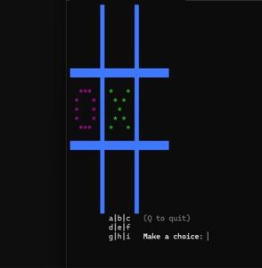
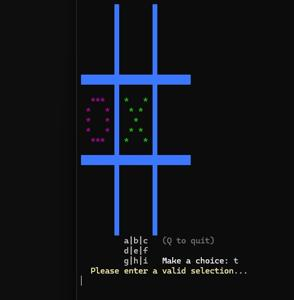

This tic-tac-toe computer game is a sub-project of my cardboard computer project that originally started as an interactive robot with a digital face named 'facebot' which eventually morphed into more of an art project. But, the interaction piece survived. I imagined the facebot providing fun, random facts, displaying the current temperature, and even playing games, all while presenting a simple digital face on an LED matrix to show correlated emotions.
The random facts part was easy: I simply had a text file with a bunch of 1-2 sentence factoids that a python script would randomly parse and print on screen. The temperature portion was much more complicated since it integrated special sensors, hardware, and code to display the current temperature, but I had already implemented similar things in many other projects like a rover, a couplerockets, and a home weather station. So, that ended up being relatively easy to incorporate as well.

What I hadn't built previously was any type of computer game. I wasn't ready to design anything from scratch, and I wanted it to be simple and universal. Naturally, tic-tac-toe was the first thing that came to mind.
I wrote it as a shell script since I was doing a lot of work with Linux machines at the time. Incidentally, Bash is still my favorite thing to "code" in - I know, it's scripting, not coding, nerds;P - simply because it is what I'm most comfortable with, I'm sure. Plus, it just feels more raw, and I'm all about technological brutalism.
I tinkered with this thing for a while as I do most things. I start with an idea, create something simple, then iterate. Create and iterate, create and iterate... Who knows how many versions it went through? But it eventually got to a point that was functional and that was good enough for me.

There's really no challenge other than overcoming luck. The computer chooses its move randomly so it is pretty easy to win. And if you do, a python script is called that displays a smiley on the LED matrix. Lose and a sad face is called. Tie? Indifferent... (I think I also put heart eyes and a "flat" face in there, too?)
DISCLAIMER: As I've said before, to all the real programmers out there, a programmer I am not. The only programming I do is for fun as a hobby. I realize my code is sloppy, inefficient, and downright ugly. But hey, for my purposes, it works! And absolutely no AI was used to write any portion; AI wasn't even a thing! Get off my lawn!;P